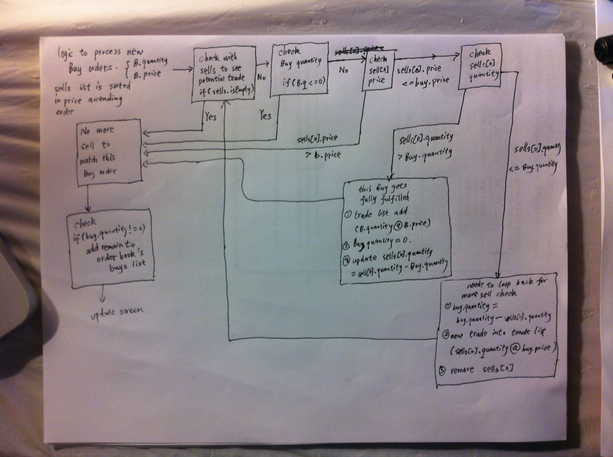

TradeBot
This is a simplified single stock trade simulation program
author: Jian Chen
June 6, 2014
dannycj11 at gmail dot com
1. Class Explained
Order class:
each order placed by user: quantity and price
for future development:
side: Buy or Sell
id: each order has a unique id
OrderBook class:
two seperate LinkedList store Buy orders and Sell orders in order book
wrapper functions to help access and change content in those two LinkedList
Trade class:
each trade successfully made: quantity and price
for future development:
buy_id: the buy order in this trade
sell_id: the sell order in this trade
TradeBot class:
the main class, program entry-point, including driver function, userInputValidityCheck function
TradeBotHelper class:
helper class for TradeBot class
functions including:
public String getUserInput(){} to get user input
public void addBuy(int buyquantity, float buyprice){} to analysis new buy order against existing order book
public void addSell(int sellquantity, float sellprice){} to analysis new sell order against existing order book
public void updateScreen(){} to display new trades and current order book
2. Important Modules
2.1 User Input Validity Check
this checks if a user input is valid, the checking goes linearly:
check [enter] -> check 'quit' -> check if it could be seperated to 3 segment -> check for valid side -> check for valid quantity -> check for valid price
2.2 Trade Detection
public void addBuy(int buyquantity, float buyprice){} and public void addSell(int sellquantity, float sellprice){} are used to deal with trade detection for seperate buy and sell order
logic flow when there is a new buy order:

logic flow when there is a new sell order would be similar to the buy order's
2.3 Print Format
In order to print order book's buy orders in price descending fashion, and order book's sell order in price ascending fashion, two temperory ArrayList are used to help find same priced orders and combine them, and finally print them out.
In order to protect the printing format, the quantity is limited to 9 digit (999,999,999)
3. Future Development Suggestion
use two OrderBooks, one for order_book realtime, the other order_book recordkeeping.
realtime order_book updates everytime after excution of an order
recordkeeping order_book keeps all buy and sell orders in time order, each with a unique id
use two trade lists, realtime and record keeping
recordkeeping trade list store all trades from beginning, in the list, each Trade would have a buy_id and sell_id points to more order information in recordkeeping order_book
the realtime trade list would be used to help printing out trades happened in each order excution